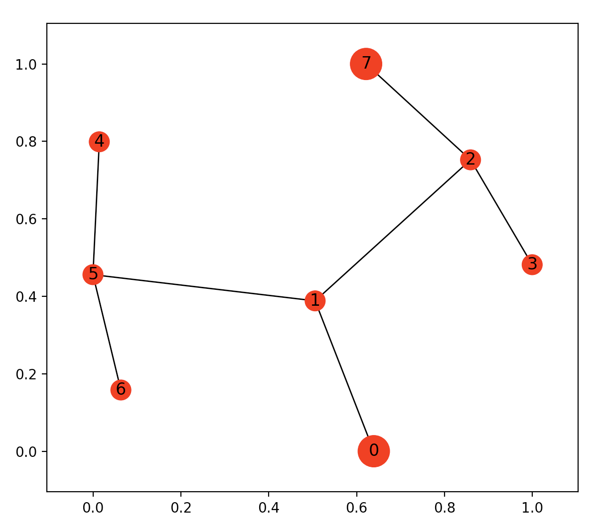
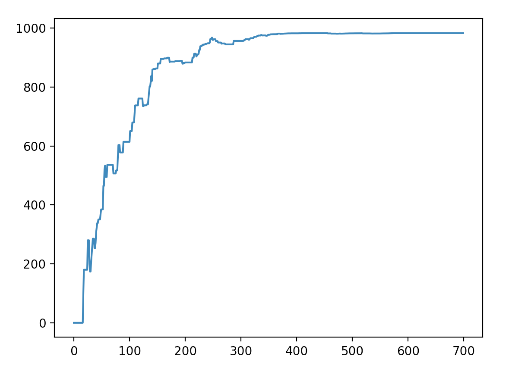
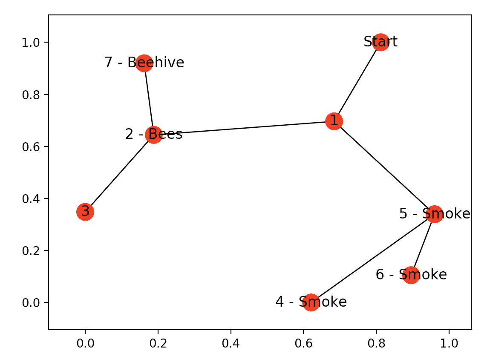
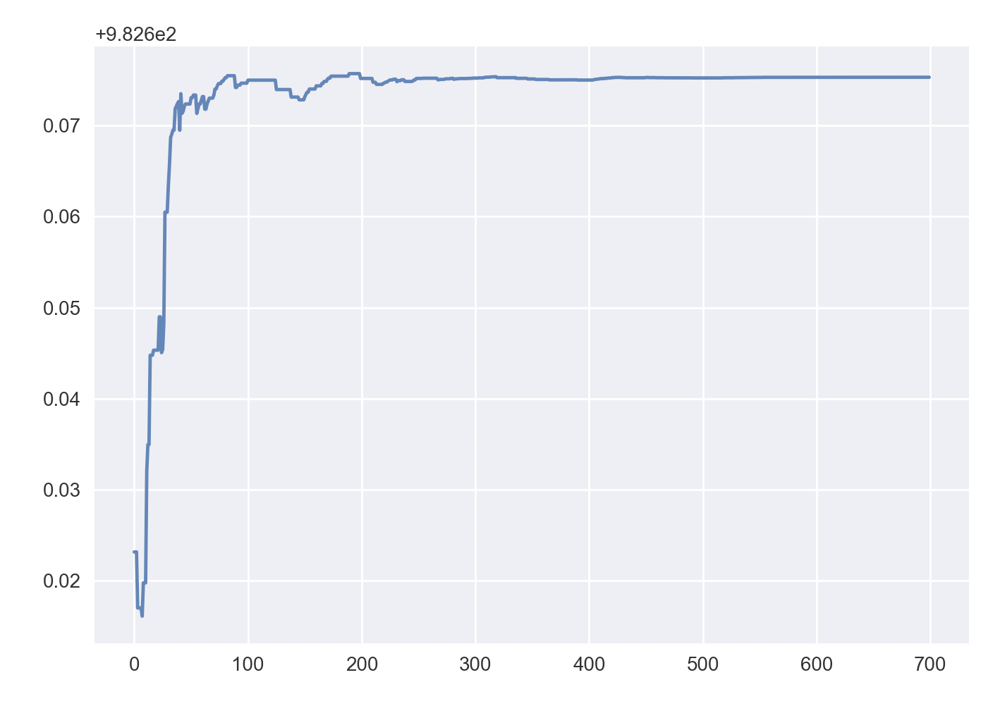

Reinforcement Learning - A Simple Python Example and a Step Closer to AI with Assisted Q-Learning
Practical walkthroughs on machine learning, data exploration and finding insight.
Resources

Q-learning is a model-free reinforcement learning technique. Specifically, Q-learning can be used to find an optimal action-selection policy for any given (finite) Markov decision process (MDP). Q-learning - Wikipedia
Machine learning is assumed to be either supervised or unsupervised but a recent new-comer broke the status-quo - reinforcement learning. Supervised and unsupervised approaches require data to model, not reinforcement learning! That’s right, it can explore space with a handful of instructions, analyze its surroundings one step at a time, and build data as it goes along for modeling.
In this walk-through, we’ll use Q-learning to find the shortest path between two areas. It has the ability to embark on a journey with no knowledge of what to do next. This approach requires constant trial and error as it collects data about its surroundings and figures out how to accomplish its goal. This opens up interesting possibilities, what about recording additional information, like environmental details along the way that it may not fully understand until after it reaches its goal? And once reached, could it review that additional data to determine if any of it would have helped it reach its goal faster?A VERY Simple Python Q-learning Example
But let’s first look at a very simple python implementation of q-learning - no easy feat as most examples on the Internet are too complicated for new comers. The code is heavily borrowed from Mic’s great blog post Getting AI smarter with Q-learning: a simple first step in Python. Thanks Mic for keeping it simple!
import numpy as np
import pylab as plt
# map cell to cell, add circular cell to goal point
points_list = [(0,1), (1,5), (5,6), (5,4), (1,2), (2,3), (2,7)]
We create a points-list map that represents each direction our bot can take. Using this format allows us to easily create complex graphs but also easily visualize everything with networkx graphs.
Our starting point is 0, our goal point is 7.
goal = 7
import networkx as nx
G=nx.Graph()
G.add_edges_from(points_list)
pos = nx.spring_layout(G)
nx.draw_networkx_nodes(G,pos)
nx.draw_networkx_edges(G,pos)
nx.draw_networkx_labels(G,pos)
plt.show()
The map shows that point 0 is where our bot will start its journey and point 7 is it’s final goal. The extra added points and false paths are the obstacles the bot will have to contend with. If you look at the top image, we can weave a story into this search - our bot is looking for honey, it is trying to find the hive and avoid the factory (the story-line will make sense in the second half of the article).
We then create the rewards graph - this is the matrix version of our list of points map. We initialize the matrix to be the height and width of our points list (8 in this example) and initialize all values to -1:
# how many points in graph? x points
MATRIX_SIZE = 8
# create matrix x*y
R = np.matrix(np.ones(shape=(MATRIX_SIZE, MATRIX_SIZE)))
R *= -1
We then change the values to be 0 if it is a viable path and 100 if it is a goal path (for more on this topic, see Mnemosyne_studio’s great tutorial: Deep Q Learning for Video Games - The Math of Intelligence #9)
# assign zeros to paths and 100 to goal-reaching point
for point in points_list:
print(point)
if point[1] == goal:
R[point] = 100
else:
R[point] = 0
if point[0] == goal:
R[point[::-1]] = 100
else:
# reverse of point
R[point[::-1]]= 0
# add goal point round trip
R[goal,goal]= 100
Rmatrix([[ -1., 0., -1., -1., -1., -1., -1., -1.],
[ 0., -1., 0., -1., -1., 0., -1., -1.],
[ -1., 0., -1., 0., -1., -1., -1., 100.],
[ -1., -1., 0., -1., -1., -1., -1., -1.],
[ -1., -1., -1., -1., -1., 0., -1., -1.],
[ -1., 0., -1., -1., 0., -1., 0., -1.],
[ -1., -1., -1., -1., -1., 0., -1., -1.],
[ -1., -1., 0., -1., -1., -1., -1., 100.]])
To read the above matrix, the y-axis is the state or where your bot is currently located, and the x-axis is your possible next actions. We then build our Q-learning matrix which will hold all the lessons learned from our bot. The Q-learning model uses a transitional rule formula and gamma is the learning parameter (see Deep Q Learning for Video Games - The Math of Intelligence #9 for more details). The rest of this example is mostly copied from Mic’s blog post Getting AI smarter with Q-learning: a simple first step in Python.
Q = np.matrix(np.zeros([MATRIX_SIZE,MATRIX_SIZE]))
# learning parameter
gamma = 0.8
initial_state = 1
def available_actions(state):
current_state_row = R[state,]
av_act = np.where(current_state_row >= 0)[1]
return av_act
available_act = available_actions(initial_state)
def sample_next_action(available_actions_range):
next_action = int(np.random.choice(available_act,1))
return next_action
action = sample_next_action(available_act)
def update(current_state, action, gamma):
max_index = np.where(Q[action,] == np.max(Q[action,]))[1]
if max_index.shape[0] > 1:
max_index = int(np.random.choice(max_index, size = 1))
else:
max_index = int(max_index)
max_value = Q[action, max_index]
Q[current_state, action] = R[current_state, action] + gamma * max_value
print('max_value', R[current_state, action] + gamma * max_value)
if (np.max(Q) > 0):
return(np.sum(Q/np.max(Q)*100))
else:
return (0)
update(initial_state, action, gamma)
We keep following Mic’s blog and run the training and testing functions that will run the update function 700 times allowing the Q-learning model to figure out the most efficient path:
# Training
scores = []
for i in range(700):
current_state = np.random.randint(0, int(Q.shape[0]))
available_act = available_actions(current_state)
action = sample_next_action(available_act)
score = update(current_state,action,gamma)
scores.append(score)
print ('Score:', str(score))
print("Trained Q matrix:")
print(Q/np.max(Q)*100)
# Testing
current_state = 0
steps = [current_state]
while current_state != 7:
next_step_index = np.where(Q[current_state,] == np.max(Q[current_state,]))[1]
if next_step_index.shape[0] > 1:
next_step_index = int(np.random.choice(next_step_index, size = 1))
else:
next_step_index = int(next_step_index)
steps.append(next_step_index)
current_state = next_step_index
print("Most efficient path:")
print(steps)
plt.plot(scores)
plt.show()Most efficient path:
[0, 1, 2, 7]
We see that the model did correctly find the most efficient path from the starting node 0 to the goal node 7 and took around 400 iterations to converge to a solution.
Version 2.0, with Environmental Details
Now let’s take this a step further, look at the top image again, notice how the factory is surrounded by smoke and the hive, by bees. Let’s assume that bees don’t like smoke or factories, thus there will never be a hive or bees around smoke. What if our bot could record those environmental factors and turn them into actionable insight? Whenever the bot finds smoke it can turn around immediately instead of continuing to the factory, whenever it finds bees, it can stick around and assume the hive it close.
bees = [2]
smoke = [4,5,6]
G=nx.Graph()
G.add_edges_from(points_list)
mapping={0:'Start', 1:'1', 2:'2 - Bees', 3:'3', 4:'4 - Smoke', 5:'5 - Smoke', 6:'6 - Smoke', 7:'7 - Beehive'}
H=nx.relabel_nodes(G,mapping)
pos = nx.spring_layout(H)
nx.draw_networkx_nodes(H,pos, node_size=[200,200,200,200,200,200,200,200])
nx.draw_networkx_edges(H,pos)
nx.draw_networkx_labels(H,pos)
plt.show()
We assign node 2 as having bees and nodes 4,5,6 as having smoke. Our Q-learning bot doesn’t know yet that there are bees or smoke there nor does it know that bees are good and smoke bad in finding hives. The bot needs to do another run like we just did, but this time it needs to collect environmental factors.
Here is the new update function with the capability of updating the Q-learning scores when if finds either bees or smoke.
# re-initialize the matrices for new run
Q = np.matrix(np.zeros([MATRIX_SIZE,MATRIX_SIZE]))
enviro_bees = np.matrix(np.zeros([MATRIX_SIZE,MATRIX_SIZE]))
enviro_smoke = np.matrix(np.zeros([MATRIX_SIZE,MATRIX_SIZE]))
initial_state = 1
def available_actions(state):
current_state_row = R[state,]
av_act = np.where(current_state_row >= 0)[1]
return av_act
def sample_next_action(available_actions_range):
next_action = int(np.random.choice(available_act,1))
return next_action
def collect_environmental_data(action):
found = []
if action in bees:
found.append('b')
if action in smoke:
found.append('s')
return (found)
available_act = available_actions(initial_state)
action = sample_next_action(available_act)
def update(current_state, action, gamma):
max_index = np.where(Q[action,] == np.max(Q[action,]))[1]
if max_index.shape[0] > 1:
max_index = int(np.random.choice(max_index, size = 1))
else:
max_index = int(max_index)
max_value = Q[action, max_index]
Q[current_state, action] = R[current_state, action] + gamma * max_value
print('max_value', R[current_state, action] + gamma * max_value)
environment = collect_environmental_data(action)
if 'b' in environment:
enviro_bees[current_state, action] += 1
if 's' in environment:
enviro_smoke[current_state, action] += 1
if (np.max(Q) > 0):
return(np.sum(Q/np.max(Q)*100))
else:
return (0)
update(initial_state,action,gamma)
scores = []
for i in range(700):
current_state = np.random.randint(0, int(Q.shape[0]))
available_act = available_actions(current_state)
action = sample_next_action(available_act)
score = update(current_state,action,gamma)
# print environmental matrices
print('Bees Found')
print(enviro_bees)
print('Smoke Found')
print(enviro_smoke)Bees Found
[[ 0. 0. 0. 0. 0. 0. 0. 0.]
[ 0. 0. 21. 0. 0. 0. 0. 0.]
[ 0. 0. 0. 0. 0. 0. 0. 0.]
[ 0. 0. 93. 0. 0. 0. 0. 0.]
[ 0. 0. 0. 0. 0. 0. 0. 0.]
[ 0. 0. 0. 0. 0. 0. 0. 0.]
[ 0. 0. 0. 0. 0. 0. 0. 0.]
[ 0. 0. 41. 0. 0. 0. 0. 0.]]
Smoke Found
[[ 0. 0. 0. 0. 0. 0. 0. 0.]
[ 0. 0. 0. 0. 0. 30. 0. 0.]
[ 0. 0. 0. 0. 0. 0. 0. 0.]
[ 0. 0. 0. 0. 0. 0. 0. 0.]
[ 0. 0. 0. 0. 0. 90. 0. 0.]
[ 0. 0. 0. 0. 23. 0. 29. 0.]
[ 0. 0. 0. 0. 0. 92. 0. 0.]
[ 0. 0. 0. 0. 0. 0. 0. 0.]]The environmental matrices show how many bees and smoke the bot found during its journey while searching for the most efficient path to the hive. To make this walk-through simpler, I am assuming two things - we modeled the environmental data and found out that the bees have a positive coefficient on finding hives, and smoke, a negative one. And we are going to reuse the environmental matrix already mapped out for our landscape, a more realistic approach would be to dynamically look at a new environment and assign environmental biases as they are encountered.
Q = np.matrix(np.zeros([MATRIX_SIZE,MATRIX_SIZE]))
# subtract bees with smoke, this gives smoke a negative effect
enviro_matrix = enviro_bees - enviro_smoke
# Get available actions in the current state
available_act = available_actions(initial_state)
# Sample next action to be performed
action = sample_next_action(available_act)
# This function updates the Q matrix according to the path selected and the Q
# learning algorithm
def update(current_state, action, gamma):
max_index = np.where(Q[action,] == np.max(Q[action,]))[1]
if max_index.shape[0] > 1:
max_index = int(np.random.choice(max_index, size = 1))
else:
max_index = int(max_index)
max_value = Q[action, max_index]
Q[current_state, action] = R[current_state, action] + gamma * max_value
print('max_value', R[current_state, action] + gamma * max_value)
environment = collect_environmental_data(action)
if 'b' in environment:
enviro_matrix[current_state, action] += 1
if 's' in environment:
enviro_matrix[current_state, action] -= 1
return(np.sum(Q/np.max(Q)*100))
update(initial_state,action,gamma)
enviro_matrix_snap = enviro_matrix.copy()
def available_actions_with_enviro_help(state):
current_state_row = R[state,]
av_act = np.where(current_state_row >= 0)[1]
# if there are multiple routes, dis-favor anything negative
env_pos_row = enviro_matrix_snap[state,av_act]
if (np.sum(env_pos_row < 0)):
# can we remove the negative directions from av_act?
temp_av_act = av_act[np.array(env_pos_row)[0]>=0]
if len(temp_av_act) > 0:
print('going from:',av_act)
print('to:',temp_av_act)
av_act = temp_av_act
return av_act
# Training
scores = []
for i in range(700):
current_state = np.random.randint(0, int(Q.shape[0]))
available_act = available_actions_with_enviro_help(current_state)
action = sample_next_action(available_act)
score = update(current_state,action,gamma)
scores.append(score)
print ('Score:', str(score))
plt.plot(scores)
plt.show()
We see that the bot converges in less tries, say around 100 less, than our original model. This isn’t meant to be a controlled environment to compare both approaches, instead it’s about triggering thoughts on different ways of applying reinforced learning for discovery…
Thanks to Thomas and Lucas for the artwork!